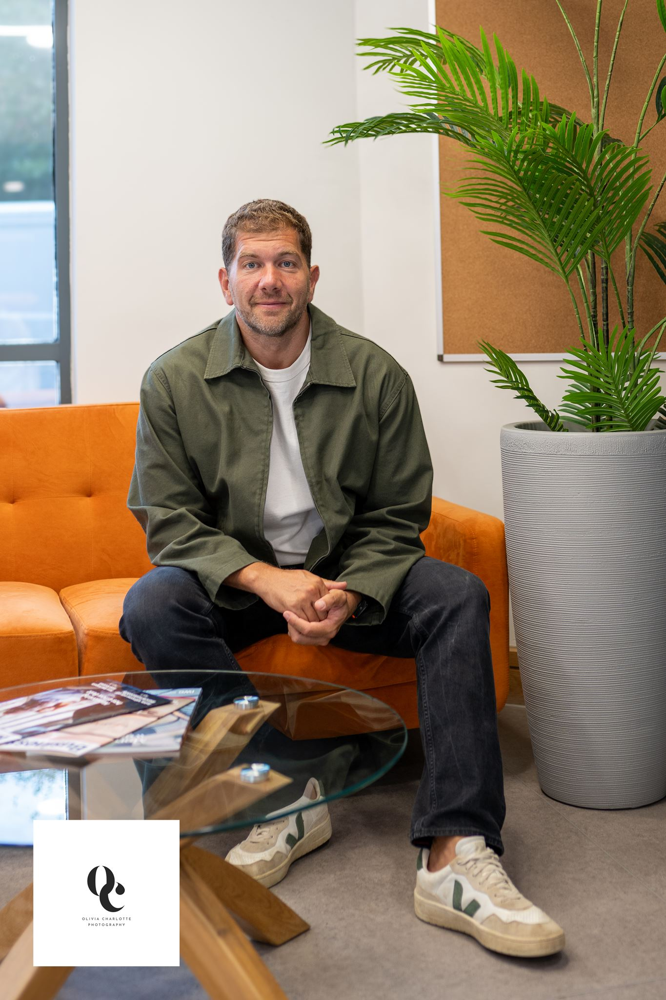

ABOUT COTIDAL
Insight, structure and confidence, wherever the tide flows.
Fractional CFO leadership and strategic advisory support for ambitious, founder-led businesses.
WHY COTIDAL EXISTS
SMEs deserve access to the same quality of strategic insight, financial leadership and people development enjoyed by larger organisations.
Running a growing business can be a lonely place. The numbers, the people, the big calls: they all land on the founder’s desk. Cotidal exists so they don’t land there alone.
WHAT WORKING WITH COTIDAL LOOKS LIKE
Steady, senior support that fits how you actually work.
Senior expertise, accessed flexibly, without full-time cost.
Independent perspective and structured decision-making.
Hands-on engagement, not advisory distance.
Cross-functional reach across finance, strategy and operations.
Support that scales as your needs change.
A proven track record with ambitious SMEs.

THE FOUNDER
Tom Fitzgerald ACA
Founder
Tom is a Chartered Accountant (ICAEW) who trained with Grant Thornton and has spent his career in senior finance and leadership roles: Financial Controller, Finance Director, Group CFO and Managing Director, across private equity backed, owner-managed and listed businesses. His sector experience spans legal and professional services, consumer marketing, property, supply chain and logistics, renewable energy and business services.
Along the way he has taken a business through an IPO on AIM, led the creation of a law firm that turned profitable in its first year and now employs over 60 people, assessed and negotiated acquisitions and joint ventures, and guided companies through cashflow pressure, restructuring and turnaround, the moments when experienced, calm leadership matters most. He is also an accredited Insights Discovery practitioner.
Tom founded Cotidal to give growing businesses access to that experience during their critical phases, without the cost or commitment of a permanent CFO hire.
Let’s start with a conversation.
No pitch, no obligation. Just an experienced ear and an honest view.